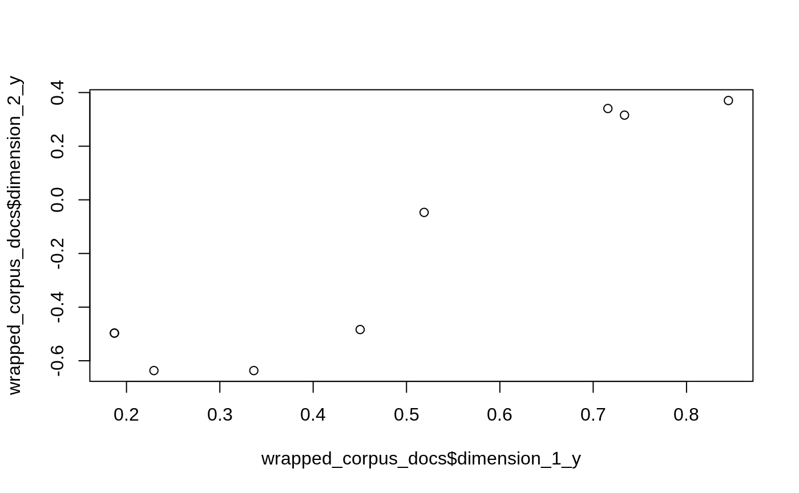
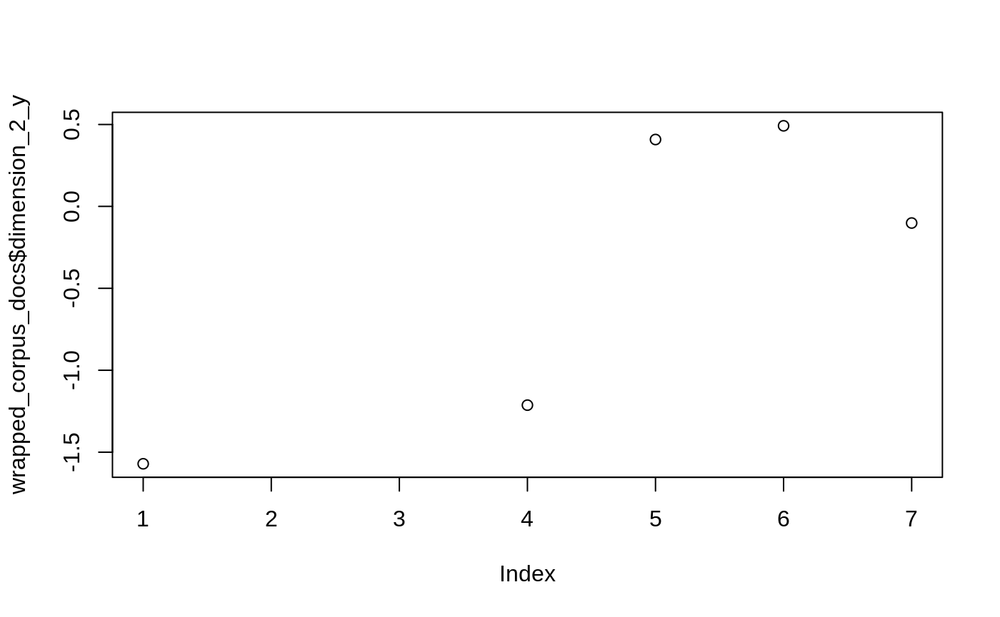
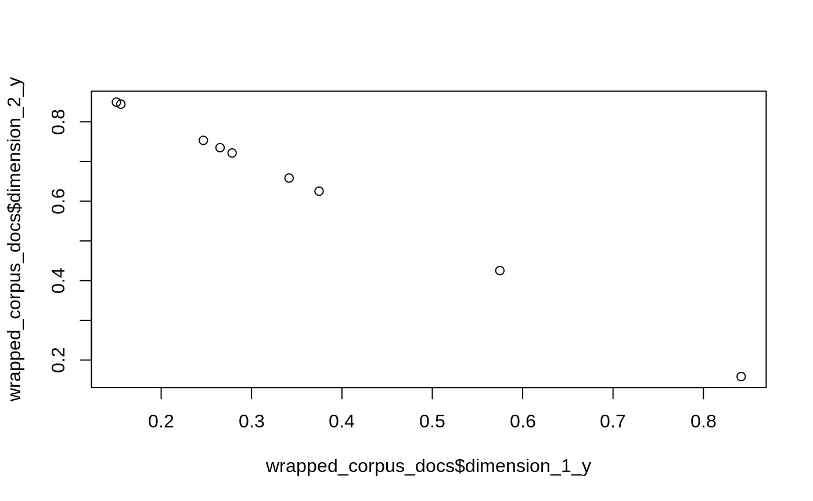

models.RmdFirst we preprocess the corpus using example data, a tiny corpus of 9 documents. Reproducing the tutorial on corpora and vector spaces.
library(gensimr)
set.seed(42) # rerproducability
# sample data
data(corpus, package = "gensimr")
print(corpus)
#> [1] "Human machine interface for lab abc computer applications"
#> [2] "A survey of user opinion of computer system response time"
#> [3] "The EPS user interface management system"
#> [4] "System and human system engineering testing of EPS"
#> [5] "Relation of user perceived response time to error measurement"
#> [6] "The generation of random binary unordered trees"
#> [7] "The intersection graph of paths in trees"
#> [8] "Graph minors IV Widths of trees and well quasi ordering"
#> [9] "Graph minors A survey"
# preprocess corpus
docs <- prepare_documents(corpus)
#> → Preprocessing 9 documents
#> ← 9 documents after perprocessing
docs[[1]] # print first preprocessed document
#> [[1]]
#> [1] "human"
#>
#> [[2]]
#> [1] "interface"
#>
#> [[3]]
#> [1] "computer"Once preprocessed we can build a dictionary.
dictionary <- corpora_dictionary(docs)A dictionary essentially assigns an integer to each term.
doc2bow simply applies the method of the same name to every documents (see example below); it counts the number of occurrences of each distinct word, converts the word to its integer word id and returns the result as a sparse vector.
# native method to a single document
dictionary$doc2bow(docs[[1]])
#> [(0, 1), (1, 1), (2, 1)]
# apply to all documents
corpus_bow <- doc2bow(dictionary, docs)Then serialise to matrix market format, the function returns the path to the file (this is saved on disk for efficiency), if no path is passed then a temp file is created. Here we set auto_delete to FALSE otherwise the corpus is deleted after first use. Note this means you should manually delete it with delete_mmcorpus.
(corpus_mm <- serialize_mmcorpus(corpus_bow, auto_delete = FALSE))
#> ℹ Path: /var/folders/n9/ys9t1h091jq80g4hww24v8g0n7v578/T//RtmpPPx5Ue/file24b0356abe1e.mm
#> ✔ Temp file
#> ✖ Delete after useThen initialise a model, we’re going to use a Latent Similarity Indexing method later on (model_lsi) which requires td-idf.
tfidf <- model_tfidf(corpus_mm)We can then use the model to transform our original corpus.
corpus_transformed <- wrap(tfidf, corpus_bow)Finally, we can build models, the number of topics of model_* functions defautls to 2, which is too low for what we generally would do with gensimr but works for the low number of documents we have. Below we reproduce bits and bobs of the topics and transformation.
Note that we use the transformed corpus.
lsi <- model_lsi(corpus_transformed, id2word = dictionary, num_topics = 2L)
lsi$print_topics()
#> [(0, '0.703*"trees" + 0.538*"graph" + 0.402*"minors" + 0.187*"survey" + 0.061*"system" + 0.060*"time" + 0.060*"response" + 0.058*"user" + 0.049*"computer" + 0.035*"interface"'), (1, '-0.460*"system" + -0.373*"user" + -0.332*"eps" + -0.328*"interface" + -0.320*"response" + -0.320*"time" + -0.293*"computer" + -0.280*"human" + -0.171*"survey" + 0.161*"trees"')]We can then wrap the model around the corpus to extract further information, below we extract how each document contribute to each dimension (topic).
wrapped_corpus <- wrap(lsi, corpus_transformed)
(wrapped_corpus_docs <- get_docs_topics(wrapped_corpus))
plot(wrapped_corpus_docs$dimension_1_y, wrapped_corpus_docs$dimension_2_y)#> # A tibble: 9 x 4
#> dimension_1_x dimension_1_y dimension_2_x dimension_2_y
#> <dbl> <dbl> <dbl> <dbl>
#> 1 0 0.0660 1 -0.520
#> 2 0 0.197 1 -0.761
#> 3 0 0.0899 1 -0.724
#> 4 0 0.0759 1 -0.632
#> 5 0 0.102 1 -0.574
#> 6 0 0.703 1 0.161
#> 7 0 0.877 1 0.168
#> 8 0 0.910 1 0.141
#> 9 0 0.617 1 -0.0539
Note that we use the transformed corpus.
rp <- model_rp(corpus_transformed, id2word = dictionary, num_topics = 2L)
wrapped_corpus <- wrap(rp, corpus_transformed)
wrapped_corpus_docs <- get_docs_topics(wrapped_corpus)
plot(wrapped_corpus_docs$dimension_1_y, wrapped_corpus_docs$dimension_2_y)
Note that we use the original, non-transformed corpus.
lda <- model_lda(corpus_transformed, id2word = dictionary, num_topics = 2L)
lda_topics <- lda$get_document_topics(corpus_bow)
wrapped_corpus_docs <- get_docs_topics(lda_topics)
plot(wrapped_corpus_docs$dimension_1_y, wrapped_corpus_docs$dimension_2_y)
hdp <- model_hdp(corpus_mm, id2word = dictionary)
reticulate::py_to_r(hdp$show_topic(topic_id = 1L, topn = 5L))
#> [[1]]
#> [[1]][[1]]
#> [1] "computer"
#>
#> [[1]][[2]]
#> [1] 0.2313531
#>
#>
#> [[2]]
#> [[2]][[1]]
#> [1] "minors"
#>
#> [[2]][[2]]
#> [1] 0.185554
#>
#>
#> [[3]]
#> [[3]][[1]]
#> [1] "human"
#>
#> [[3]][[2]]
#> [1] 0.1340217
#>
#>
#> [[4]]
#> [[4]][[1]]
#> [1] "trees"
#>
#> [[4]][[2]]
#> [1] 0.1336116
#>
#>
#> [[5]]
#> [[5]][[1]]
#> [1] "graph"
#>
#> [[5]][[2]]
#> [1] 0.1041079ft <- model_fasttext(size = 4L, window = 3L, min_count = 1L)
ft$build_vocab(sentences = unname(docs))
#> None
ft$train(sentences = unname(docs), total_examples = length(docs), epochs = 10L)
#> None
# most similar
ft$wv$most_similar(positive = c('computer', 'human'), negative = c('interface'))
#> [('system', 0.41442763805389404), ('trees', 0.386058509349823), ('time', 0.22427979111671448), ('user', 0.1963859498500824), ('graph', 0.09310441464185715), ('survey', 0.07097837328910828), ('interface', -0.07697445154190063), ('minors', -0.21524256467819214), ('response', -0.39034441113471985), ('eps', -0.8746801614761353)]
# odd one out
ft$wv$doesnt_match(c("human", "computer", "interface", "tree"))
#> tree
# similarity score
ft$wv$similarity('computer', 'human')
#> 0.80814165